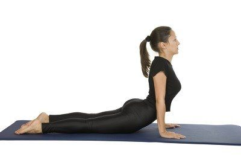
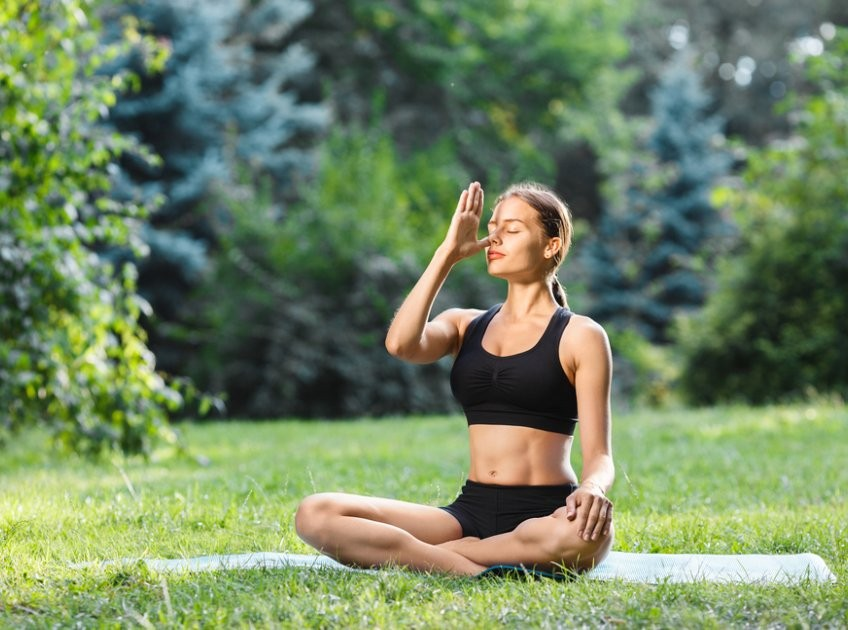

1. Padmasana
Discover serenity and grounding with Padmasana, the Lotus Pose, at FitMindBody. Begin by sitting on the mat with legs extended. Cross your legs, placing each foot on the opposite thigh, bringing the heels close to your abdomen. Maintain a straight spine and rest your hands on your knees with palms facing up. This meditative pose not only enhances flexibility but also promotes a sense of calm and focus.

2. Nagasana
Elevate your back strength and flexibility with Nagasana, the Cobra Pose, at FitMindBody. Start by lying on your stomach, legs extended, and palms beneath your shoulders. Inhale as you gently lift your chest off the mat, keeping your elbows slightly bent. Engage your back muscles and lift your gaze, creating a gentle curve in your spine. This pose not only stimulates the abdominal organs but also invigorates the entire body, fostering a sense of revitalization.

3. Anulom-Viloma
Harmonize your breath and calm your mind with Anulom Vilom, the Alternate Nostril Breathing, at FitMindBody. Sit comfortably with an upright spine. Use your right thumb to close your right nostril and inhale deeply through your left nostril. Close your left nostril with your right ring finger, release your right nostril, and exhale. Continue this alternate pattern, promoting balance and clarity in your breath, and fostering a tranquil state of mind. Anulom Vilom is a powerful pranayama technique that enhances respiratory health and promotes a sense of inner peace.
